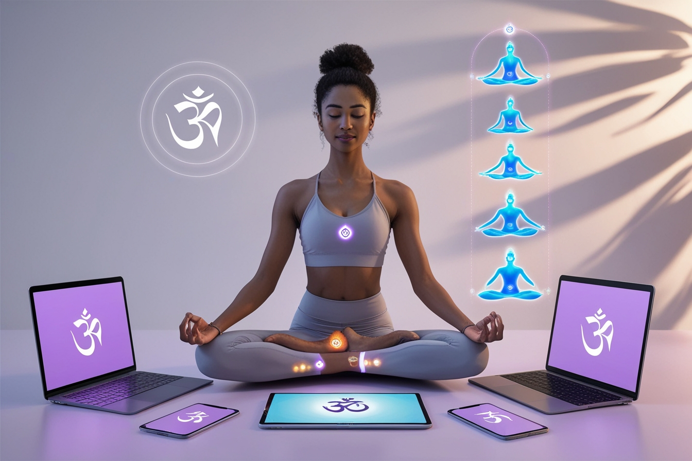

Yoga y Salud Mental en la Era Digital
En la era digital actual, donde la tecnología domina gran parte de nuestras vidas, mantener una buena salud mental se ha vuelto un desafío cada vez mayor. El yoga, una práctica milenaria, se presenta como una herramienta poderosa para contrarrestar los efectos negativos de nuestra constante conexión digital.
El impacto de la tecnología en nuestra salud mental
La hiperconectividad, las redes sociales y el trabajo remoto han difuminado los límites entre nuestra vida personal y profesional, llevando a muchos a experimentar:
- Aumento de los niveles de estrés y ansiedad
- Problemas de sueño debido al uso excesivo de pantallas
- Disminución de la capacidad de atención y concentración
- Sensación de aislamiento social a pesar de la conectividad virtual
Cómo el yoga puede ayudar
El yoga ofrece numerosos beneficios que pueden ayudarnos a navegar mejor en el mundo digital:
- Reduce el estrés: Las técnicas de respiración y meditación del yoga ayudan a activar el sistema nervioso parasimpático, reduciendo la respuesta al estrés.
- Mejora la concentración: La práctica regular de yoga puede aumentar la capacidad de atención plena, contrarrestando la dispersión mental causada por el multitasking digital.
- Promueve el descanso: El yoga nidra y otras prácticas relajantes pueden mejorar la calidad del sueño, afectada por el uso excesivo de dispositivos electrónicos.
- Fomenta la conexión real: Las clases de yoga presenciales ofrecen una oportunidad de interacción social genuina, algo cada vez más valioso en nuestra sociedad digital.
Integrando el yoga en tu rutina digital
Aquí hay algunas formas de incorporar el yoga en tu vida digital para mejorar tu bienestar mental:
- Establece recordatorios en tu smartphone para hacer pausas y realizar respiraciones profundas.
- Utiliza apps de yoga para mantener una práctica constante, incluso cuando no puedas asistir a clases presenciales.
- Crea un espacio libre de tecnología en tu hogar para tu práctica de yoga y meditación.
- Participa en desafíos de yoga en línea para mantenerte motivado y conectado con una comunidad.
En conclusión, mientras navegamos por los desafíos de la era digital, el yoga se presenta como un ancla, recordándonos la importancia de conectar con nuestro cuerpo, mente y respiración. Al integrar esta práctica ancestral en nuestra vida moderna, podemos encontrar un equilibrio saludable entre el mundo digital y nuestro bienestar interior.
Comentarios